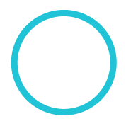

<style>
  /*dupilcates*/
  ion-content {
    background-color: #90ccef;
  }
  .btn {
    font-size: 1.2em;
    display: block;
    color: #999;
    border: 2px solid #ccc;
    background-color: #ccc;
    padding: 8px 0;
  }
  .btn-half {
    width: 90%;
    margin: 5%;
  }
  .buttonEnabled {
    color: #fff;
    background-color: #90f500;
    border: 2px solid #fff;
  }
  .buttonEnabled:hover {
    color: #90f500;
    background-color: #fff;
    border: 2px solid #90f500;
  }

  /*new*/
  .video-screen {
    display: block;
    border: 3px solid white;
    width: 260px;
    margin: 20% auto 5%;
  }
  .grid-2 {
    width: 50%;
    display: inline;
    float: left;
  }
  .true_false {
    display: block;
    margin: 0 auto;
  }
  .director-container {
    position: relative;
  }
  .director-img {
    position: absolute;
    left: 20%;
    top: -14px;
  }
  
</style>

<ion-view>
  <ion-content>

    <!-- <video src="videofile.ogg" autoplay poster="posterimage.jpg">
      Sorry, your browser doesn't support embedded videos, 
      but don't worry, you can <a href="videofile.ogg">download it</a>
      and watch it with your favorite video player!
    </video> -->

    

    <div style="    width: 240px;
    display: block;
    margin: 0 auto;">
      <div class="grid-2">
        
      </div>

      <div class="grid-2">
        
      </div>
    </div>

    <div style="margin-top: 225px; margin-left: 25px;">
      <div ng-repeat="score in scores" ng-switch on="score.state" style="display: inline-block;
    float: left;">
        
        
        
        
    </div>
  </ion-content>
</ion-view>
